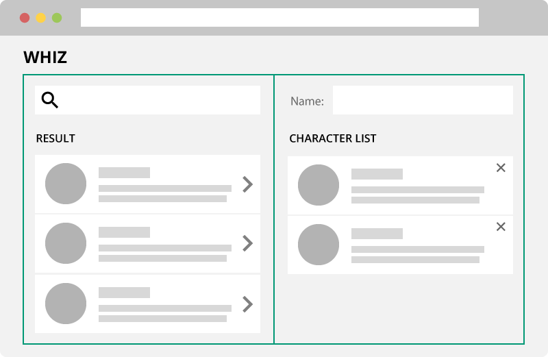

Component Pattern
Writing modular and DRY[1] code is a good habit. It will keep your software maintanable, help with testing and produce parts that can be reused throughout your software. A popular paradigm to achieve all this is the component pattern. The underlying idea of this pattern is to encapsulate your code into isolated components and thereby having small building blocks which can be composed to build a full application.
Seperating code into components is nothing new. There is a whole branch of software engineering, called “component-based software engineering”[2], which emphasises the use of components to preserve seperation of concerns. The UML specification for components reads as follows:[3]
A component represents a modular part of a system that encapsulates its contents and whose manifestation is replaceable within its environment.
A component defines its behavior in terms of provided and required interfaces. As such, a component serves as a type whose conformance is defined by these provided and required interfaces.
With the rise of React[4] and the introduction of Web Components[5] the component pattern has gained a lot of momentum and is currently seen as a best practice for building large JavaScript applications. Angular 2 will also rely heavily on components,[6] so the emphasis on components will not only help structuring our app, but will also make it easier to migrate to Angular 2 once it is ready.
If you translate the concept of components to Angular 1.x, they are really just directives with an isolated scope, a controller and most of the time they also have a template. Communication between components is handled with attribute bindings (=, & and @) and the require property of the directive definition object.
A future Angular release will include a angular.component helper, which will by default create directives that bindToController so that we do not have to write the directive definition boilerplate every time.[7]
#Container Components
Jason Bonta gave an excellent talk in which he showed how to further improve the application architecture by distinguishing between components and containers.[8] Essentially, containers are responsible for fetching data from the server or any other remote service. The response data is then passed to (child-)components, which will process the data and render markup. Components are completly data-agnostic. All of their input will be obtained through a parent container.
While the talk is about React the concept can also be applied to Angular. Imagine an app, named whiz, that lets users assemble their own squad of Marvel characters. It has a search field to query Marvel’s developer API for characters and every character whose name matches the search term will be displayed inside a result list. Listed characters can be selected by the user and added to her squad. Furthermore, users can give their squad a name and remove previously selected characters. Squads are stored into localStorage and automatically loaded when the user re-opens the app.
The below image shows a mockup of the app to better envision what the whiz app may look like:

Sticking to the aforementioned pattern the markup would consist of two containers, which is illustrated by the green rectangles. The left container hosts the search and display of Marvel characters. As well as a control to add characters to the squad. The right container consists of a text field to enter a name for the squad and a list with all the squad members. Members can be removed via a control.
Markup for the base template is shown below, followed by the container templates.
<!-- base template -->
<whiz-app>
<whiz-character-search-container>
</whiz-character-search-container>
<whiz-squad-conatiner>
</whiz-squad-container>
</whizz-app>
<!-- whiz-character-search-container template -->
<field-search
placeholder="Search by character name..."
on-change="vm.handleQuery(text)"
>
</field-search>
<marvel-character-list
list="vm.list"
on-select="vm.handleSelect(character)"
>
</marvel-character-list>
<!-- whiz-squad-container template -->
<field-text
label="Name"
on-change="vm.handleChange(text)"
>
</field-text>
<marvel-character-list
list="vm.members"
on-remove="vm.handleDelete(character)"
>
</marvel-character-list>
The <whiz-app> bootstraps the containers. But most of the markup and logic is hosted by containers and their child-components. Both container use the same component to display the character list (<marvel-character-list>), but with different configurations. The <whiz-character-search-container> uses the [on-select] callback to add characters to the squad. The <whiz-squad-conatiner> uses the [on-remove] binding to remove chracters from the squad.
→ clear seperation of concerns
- the
<field-*>components are only concerned with user input and have callback methods to forward certain events. - Data-related actions are handeled by the parent container.
<marvel-character-list>can be used by mutiple containers with different configuration.
#Directive Types
-> goes hand in hand with not using ng-controller and ng-include.
#Container
- API calls
- Interaction handler
- maintains model
#Section
- Break applications in smaller parts
- not-resusable
- DSL -> describes our Components in our application (example no <div>-soup -> ProductView …)
- less lines of code and complexity
- A Page can be constructed out of several sections that describe the Page.
#Widget
- super small
- rusable
- only have ONE purpose
- data-agnostic